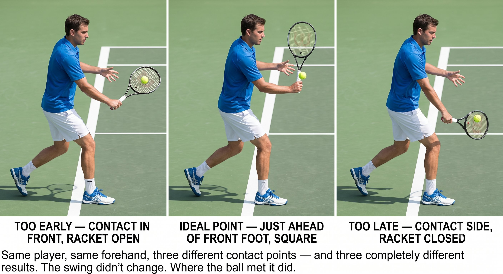
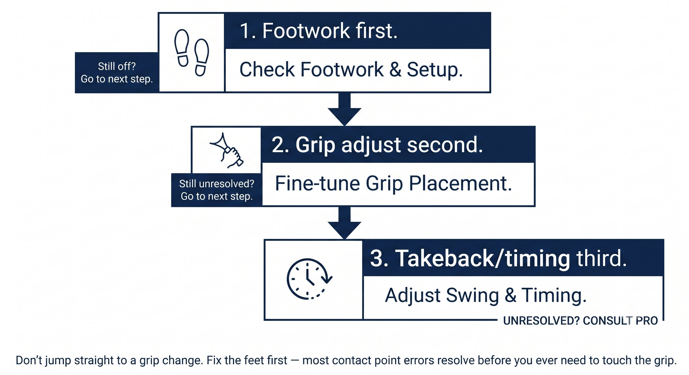

Chapter 3: The Precision
(English version of Chapter 3 in the United Tennis Handbook)
CHAPTER 3

Figure 1
THE PRECISION
Contact Point Position and Face Control
Your grip sets the baseline. Your contact point fine-tunes the face angle at impact.
Grip gives you the face angle at one spot. Contact point moves that spot along the swing arc.
— Henry Pham
Why Contact Point Is the Fine Tuner
Figure 3.1: One arc, three faces. Grip decides where "neutral" sits on this curve — contact point decides which point on the curve you actually meet the ball.

Figure 2
Figure 3.1: One arc, three faces. Grip decides where "neutral" sits on this curve — contact point decides which point on the curve you actually meet the ball.

Figure 3
Every swing is an arc, and the racket face angle changes continuously as it travels through that arc:
– Early in the arc (low, behind you): the face is open, pointing up and out.
– Middle of the arc (in front, waist-high): the face is neutral, roughly vertical.
– Late in the arc (high, past your front foot): the face is closed, pointing down.
Your grip sets where the neutral zone sits. Your contact point decides where in that arc you actually meet the ball.
The Contact Point Rule
Figure 3.2: Same player, same forehand, three different contact points — and three completely different results. The swing didn't change. Where the ball met it did.

Figure 4
For any given grip, the face angle you deliver at impact depends entirely on where the ball meets your swing arc.
Figure 3.2: Same player, same forehand, three different contact points — and three completely different results. The swing didn't change. Where the ball met it did.

Figure 5
The Principle
Contact point is the fine tuner. Grip is the coarse setting; contact point is the fine adjustment.
How Grip Shifts the Neutral Zone
Different grips put their neutral face at different points along the arc.
Coach's Note
Semi-Western players who hit late get net errors. Western players who let the ball get beside them get net errors. Eastern players who rush get long errors. The error itself tells you where your contact point sat relative to your grip’s ideal zone.
The Three Contact Dimensions
Figure 3.3: Contact point isn't a point on a line. It's a small volume of space with three independent dimensions — miss on any one axis, and the face angle changes.
Contact point isn't a single number — it's a three-dimensional coordinate, and each dimension affects the face on its own.
Figure 3.3: Contact point isn't a point on a line. It's a small volume of space with three independent dimensions — miss on any one axis, and the face angle changes.
Contact Point Windows by Shot Type
Figure 3.4: Ten shots, ten different contact points — memorize this map once, and every shot in the book after this chapter tells you exactly where your body needs to be.
Every shot in the game has its own ideal contact point and its own tolerance for error.
Figure 3.4: Ten shots, ten different contact points — memorize this map once, and every shot in the book after this chapter tells you exactly where your body needs to be.
How to Fix Contact Point Errors
Figure 3.5: Don't jump straight to a grip change. Fix the feet first — most contact point errors resolve before you ever need to touch the grip.
Once you know which direction your errors are trending, the fix almost always goes in the same order: footwork first, grip second, timing third.
Figure 3.5: Don't jump straight to a grip change. Fix the feet first — most contact point errors resolve before you ever need to touch the grip.
Drill: Find Your Ideal Contact Point
The "Call It" Drill — with a Partner or Ball Machine
1. Have a partner feed you 20 balls to the forehand. Before each one, call out loud where you expect contact: "front," "ideal," "late," "high," or "low."
2. After you hit, your partner confirms: "yes" or "actually late."
3. After 20 balls, you should be self-diagnosing with about 90 percent accuracy.
4. Repeat for the backhand, then mix both sides.
5. Advanced version: call "inside" or "outside" to track lateral position too.
The "Shadow Call" Drill — No Ball Required
– Take a shadow swing and freeze at the moment of contact. Look at where the racket face is pointing.
– Ask yourself: is this vertical? Slightly closed? Where is my front foot?
– Adjust your foot position until the face lands exactly where you want it.
– Do 50 reps. This trains the proprioception of your ideal contact point.
You don't fix face angle with your wrist. You fix it with feet, then contact point, then grip.
FEET MOVE THE CONTACT POINT. GRIP SETS THE ZONE. CONTACT POINT TUNES THE FACE.
Key Takeaways
– Know your grip's ideal contact window: depth, height, and side.
– Move your feet to bring the ball into that window — don't reach for it.
– Late contact closes the face and sends the ball into the net; early contact opens the face and sends it long.
– Drill it: call your contact point out loud before every ball, for 20 balls in a row.
– Shadow-swing check: freeze at contact, check your face angle, check your front foot.
Where This Leads
This chapter completes the Racket variable in the CORE equation: grip (Chapter 2) plus contact point (Chapter 3) equals the face angle you deliver. Chapter 4 covers what that face angle buys you — it determines roughly eighty percent of ball direction. Chapters 5 and 6 cover energy: takeback and tension. Chapter 7 integrates all of it into the full CORE loop.